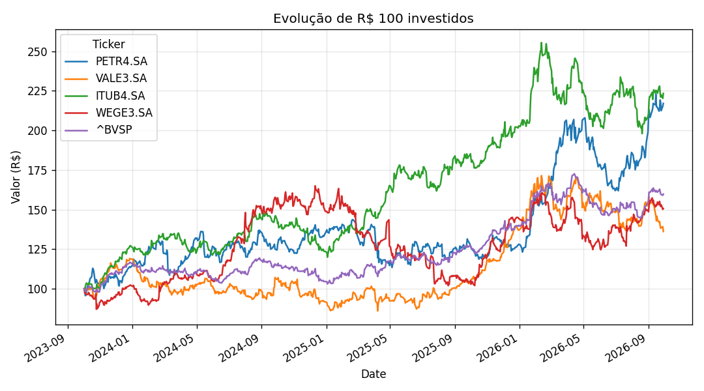
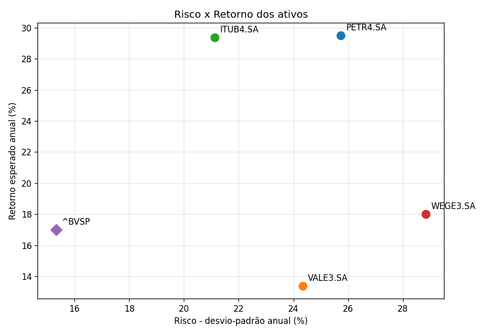
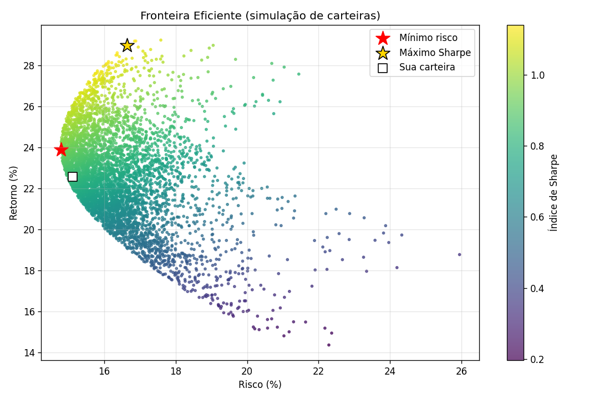
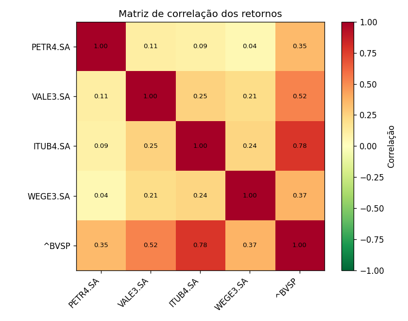
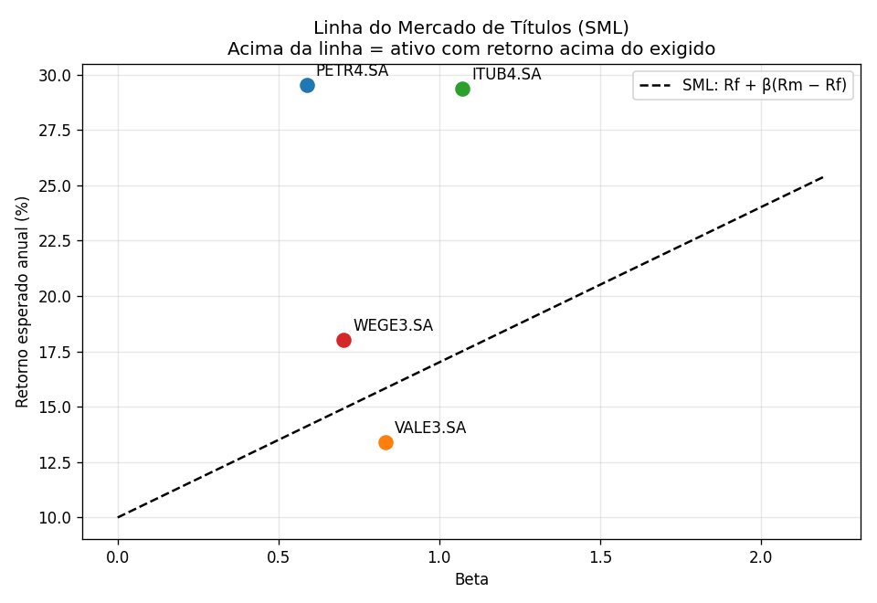

Gerado em: 30/09/2026 15:36 | Dados: YAHOO | Período: 2023-10-02 a 2026-09-29 | Rf: 10.00% a.a.
| Retorno Esperado (a.a.) | Risco - Desvio Padrão (a.a.) | Coef. de Variação | Beta | Retorno CAPM (a.a.) | Índice de Sharpe | Alfa de Jensen | Classificação | |
|---|---|---|---|---|---|---|---|---|
| Ticker | ||||||||
| PETR4.SA | 29.51% | 25.73% | 0.87 | 0.59 | 14.12% | 0.76 | 15.40% | Defensivo (beta < 1) |
| VALE3.SA | 13.38% | 24.34% | 1.82 | 0.83 | 15.83% | 0.14 | -2.44% | Defensivo (beta < 1) |
| ITUB4.SA | 29.39% | 21.12% | 0.72 | 1.07 | 17.51% | 0.92 | 11.88% | Agressivo (beta > 1) |
| WEGE3.SA | 18.02% | 28.84% | 1.60 | 0.70 | 14.92% | 0.28 | 3.10% | Defensivo (beta < 1) |
| ^BVSP | 17.01% | 15.33% | 0.90 | 1.00 | 17.01% | 0.46 | -0.00% | Neutro (beta ≈ 1) |
| Ticker | PETR4.SA | VALE3.SA | ITUB4.SA | WEGE3.SA | ^BVSP |
|---|---|---|---|---|---|
| Ticker | |||||
| PETR4.SA | 1.00 | 0.11 | 0.09 | 0.04 | 0.35 |
| VALE3.SA | 0.11 | 1.00 | 0.25 | 0.21 | 0.52 |
| ITUB4.SA | 0.09 | 0.25 | 1.00 | 0.24 | 0.78 |
| WEGE3.SA | 0.04 | 0.21 | 0.24 | 1.00 | 0.37 |
| ^BVSP | 0.35 | 0.52 | 0.78 | 0.37 | 1.00 |
Pesos: PETR4.SA: 25.0%, VALE3.SA: 25.0%, ITUB4.SA: 25.0%, WEGE3.SA: 25.0%
Retorno: 22.58% | Risco: 15.12% |
Sharpe: 0.83
Mínimo risco: PETR4.SA: 27.7%, VALE3.SA: 24.1%, ITUB4.SA: 33.5%, WEGE3.SA: 14.7% → retorno 23.90%,
risco 14.80%
Máximo Sharpe: PETR4.SA: 38.7%, VALE3.SA: 1.2%, ITUB4.SA: 57.8%, WEGE3.SA: 2.2% → retorno 28.98%,
risco 16.64%




